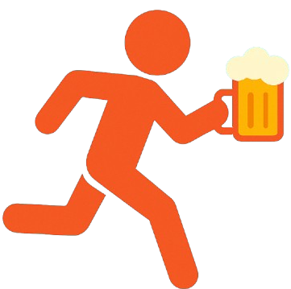
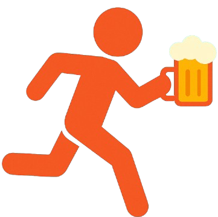

Trecho 1: Parque Ramiro Ruediger → Eisenbahn Biergarten (1.2 km)
Siga para sudeste na R. Alberto Stein, vire à direita, depois à esquerda em direção à R. Dr. Léo de Carvalho. Siga pelas ruas Dr. Max Taváres D'Amaral, Zenaide Santos de Souza, volte para a Alberto Stein e entre na R. Humberto de Campos. Por fim, vire à direita na R. Mariana Bronnemann, onde o destino estará à esquerda.
Trecho 2: Eisenbahn Biergarten → NOSSA Cozinha e Bar (0.75 km)
Siga pela R. Mariana Bronnemann e vire à direita na R. João Pessoa. O destino estará à frente.
Trecho 3: NOSSA Cozinha e Bar → Esquina Deck Bar (0.85 km)
Siga para leste na R. João Pessoa, vire à esquerda na R. Itapiranga e depois à esquerda na R. Humberto de Campos. O destino estará à direita.
Trecho 4: Esquina Deck Bar → Alek Bar (1.0 km)
Siga pela R. Humberto de Campos, vire à esquerda na R. Itapiranga e novamente à esquerda na R. Dr. Léo de Carvalho. Continue pelas ruas Jacó Brueckheimer, Pastor Antônio Lemos, Elesbão Pinto e, por fim, vire à esquerda na R. Henrique Dias. O bar estará à sua esquerda.
Trecho 5: Alek Bar → Noa Noa Blumenau (1.2 km)
Siga pela R. Henrique Dias, vire à direita na R. Mal. Deodoro, e depois de passar a Loja Bike On, vire à direita novamente. Faça uma curva suave à direita para voltar à R. Alberto Stein. O destino estará à direita, próximo ao ponto de partida.
Trecho 6: Noa Noa Blumenau → Tamandaré Food Park (0.9 km)
Siga pela R. Alberto Stein, vire à direita, e siga pelas ruas Dr. Léo de Carvalho, Dr. Max Taváres D'Amaral e Zenaide Santos de Souza. Vire à esquerda na R. Alberto Stein e, finalmente, à esquerda na R. Alm. Tamandaré, onde encontrará o destino final.
 
